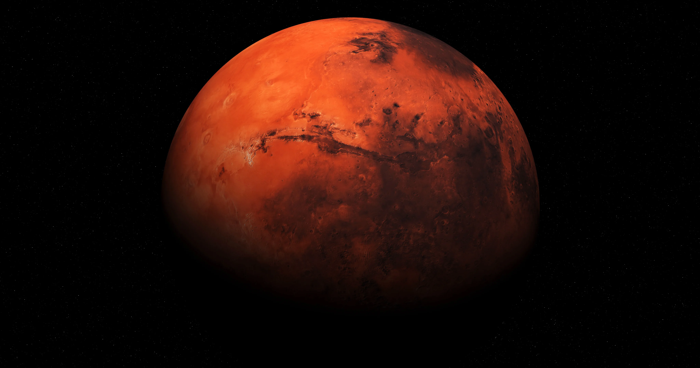
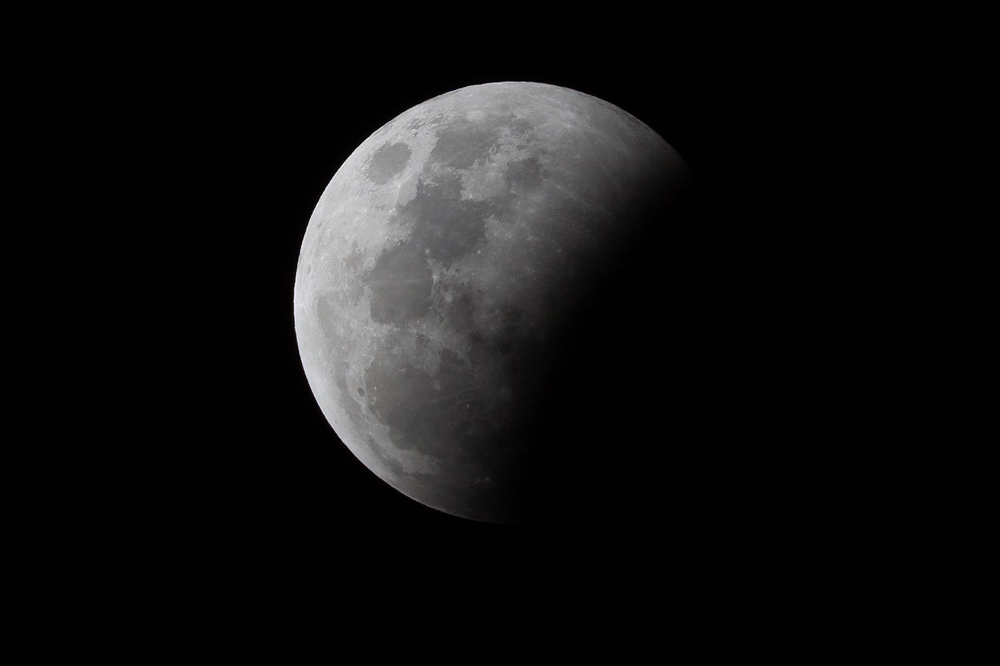
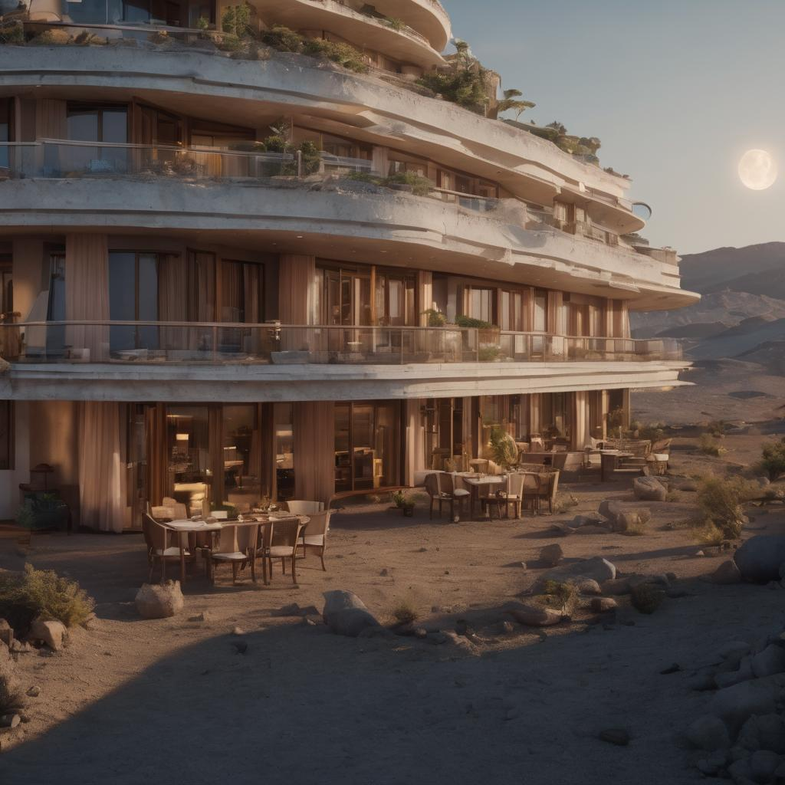

AstroTourism
About Space Tourism
Space tourism..... is a burgeoning industry that offers civilians the opportunity to venture into space, ranging from suborbital joyrides to orbital stays on the International Space Station (ISS) and missions to destinations like the Moon and Mars. Spearheaded by companies like SpaceX, Blue Origin, and Virgin Galactic, it's driven by technological advancements, including reusable rockets and innovative spacecraft. While it remains relatively expensive, efforts to reduce costs are ongoing, making space travel more accessible. Space tourism also holds scientific and educational potential, with opportunities for research and experiments in space, although environmental concerns, especially regarding carbon emissions from rocket launches, are being addressed. In essence, space tourism marks a transformative shift in human exploration, offering a glimpse into a future where space is not limited to astronauts and scientists.
Popular Destinations
-

Mars
Embark on a thrilling adventure across Mars with our expert guides. Discover Martian landscapes, history, and breathtaking vistas on an unforgettable journey into the unknown.
Explore Mars -

Moon
Experience lunar landscapes and Earthrise from the Moon.
Visit the Moon -

Space Hotels
Experience the vaccumness of space in the newly developed Space Hotels, from the future.
Explore Mars